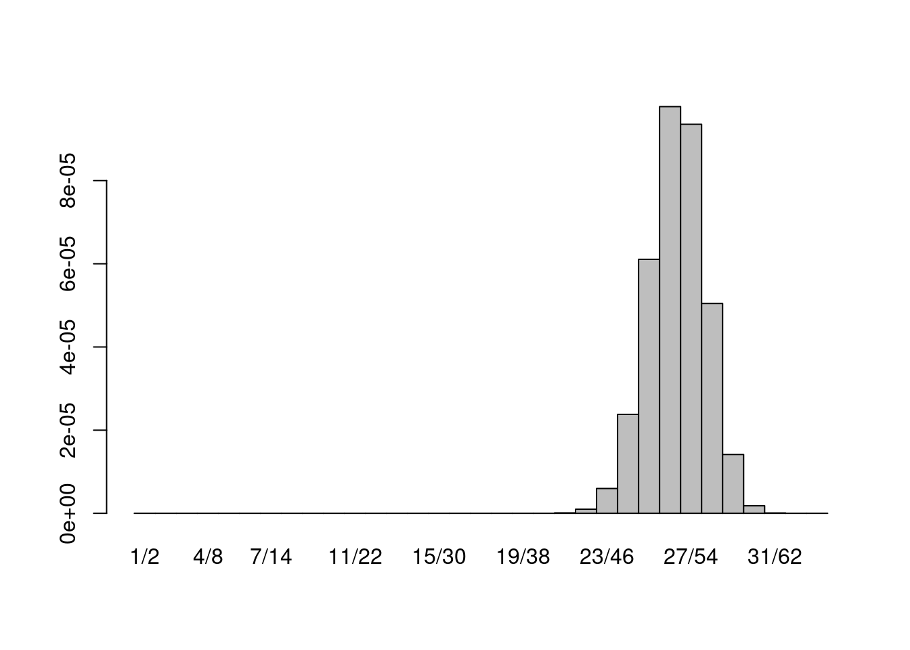

The multinomial distribution provides the probability that \(n\) objects can be assigned to \(k\) categories. Each category has its own associated probability so that \(p_1 + p_2 + \cdots + p_k = 1\). The binomial distribution is a special case where \(k=2\). If we let \(X_i\) denote the random variable for the number of the \(n\) objects found to be in the \(i\)th category, then in general:
\[ \textrm{P}(X_1=n_1, X_2=n_2, \ldots ,X_k=n_k) =\frac{n!}{n_1!n_2!\cdots n_k!}p_1^{n_1}p_2^{n_2}\cdots p_k^{n_k} \]
We are interested in the probabilities, expected values, and variances of the ratios of the multinomial counts such as \(\frac{X_i}{X_j}\). We shall call these values multinomial ratios. Our concerns are, particularly, for when the value of \(n\) is relatively small and asymptoptic considerations are not particularly accurate.
Without loss of generality we may develop our technique to apply to \(X_1\) and \(X_2\) (In the future we may develop the theory to include multinomial ratio probabilities conditioned upon other counts or multinomial ratios). Call \(X_1\) the numerator count and its corresponding category the numerator category. Similarly for \(X_2\) the denominator count for the denominator category. Under these considerations, for every multinomial distribution with \(k\) categories, there is a trinomial distribution corresponding to the three categories:
All the relevant probabilities and statistics for the multinomial ratio \(\frac{X_1}{X_2}\) we be the same for this trinomial distribution.
To simplify the formulas we will use
\[ \begin{aligned} p&:=p_1\\ q&:=p_2\\ r&:=p_3\\ X&:=X_1\\ Y&:=X_2\\ Z&:=X_3 \end{aligned} \] Notice that \(r=1-p-q\).
The trinomial count distribution with category probabilities \(p+q+r=1\) with \(n\) objects has a generating function of the form
\[ f(X,Y,Z)=(pX+qY+rZ)^n \]
Two values for \(X\) and \(Y\) have the same ratio \(\alpha\) if \(\frac{x}{y}=\alpha\). In otherwords if \(x=\alpha y\). Suppose that in lowest common form \(\alpha = \frac{m}{n}\). The values of \((x,y)\) that generate the same ratio are those integers satisfying \(\frac{x}{y} = \alpha\) and \(x+y \le n\).
So… despite any other issues I can certainly write a function to calculate these values once parameters are decided upon. For the interests of time efficiency let’s make the count table and then
source("make.table.R")This was a total accident… but it looks SOO cool I wanted to keep it:
tmp<-make.table(100,0.4,0.4)
heatmap(tmp$count)Here’s the better image
image(tmp$count)Now we are going to need to figure out which count entries are the same (and hence need to be added). For \(n=100\) the maximum value of a fraction in lowest form is 100, so the minimum distance possible between two fractions in this table are \(0.01\). So we have several interesting questions… the first is what does the density for all fractions with a max denominator of 100 and a sum of terms less than or equal to 100 look like? Turns out that this is a VERY strange distribution because the number of count combinations that can contribute to a specific rational number will depend upon how many forms of the fraction can be built satisfying
tmp<-make.table(100,0.4,0.4)
t2<-aggregate(c(tmp$count),by=list(c(tmp$index)),sum)
plot(t2$Group.1[-c(1,1421)]/256,t2$x[-c(1,1421)],xlim=c(0,2))Now let’s make a shiny applet to adjust the values:
Let’s calculate a few probabilities by hand and a few sanity checks to make certain that no mistakes were made.
The first one. Since \(n=100\) we can We can, for a few fractions in lowest form determine the number of equivalent fractional forms. For example \(\frac{1}{2} = \frac{2}{4} = \frac{3}{6} = \cdots \frac{33}{66}\) so there should be \(33\) indexes generated by the make.table() function corresponding to \(\frac{1}{2}\). Given our conventions, The index should be 1*256/2=128:
tmp<-make.table(100,0.4,0.4)
sum(tmp$index==128)## [1] 33The probability for this should be
$$ \begin{aligned} (=)&=(X_1=1,X_2=2) + + (X_1=33,X_2=66)\
&=(0.4)1(0.4)2(0.2){97}++(0.4){33}(0.4)2{66}0.2){1}\ &=(0.4)3(0.2){97}++(0.4){99}(0.2){1}\ \end{aligned} $$
I hand-tested dmultinom to ensure that it behaved the way I think it did. Let’s make a barplot of the probabilities that contribute to 1/2:
fracs=which(tmp$index==128,arr.ind = TRUE)
fracs=fracs-1 #because indices are 1-based but counts are 0-based
probs= apply(fracs,1,function(r){dmultinom(c(r[1],r[2],100-r[1]-r[2]),100,c(0.4,0.4,0.2))})
barplot(probs,width=1,space=0,names.arg=paste0(fracs[,1],"/",fracs[,2]))
sum(probs)## [1] 0.0003498089t2[t2$Group.1==128,]## Group.1 x
## 128 128 0.0003498089Since infinity is a possible answer for the ratio (think 2/0) there is no mean or sd in the usual sense.
Looks like the mode is the ratio of \(\frac{p}{q}\) (as it should be). It’s less clear to me what the mode is when the \(\frac{p}{q}\) is not representable by an appropriate fraction…. probably the closest such fraction.
A few more notes. Let \(\mathbb{Fr}_n\) denote the space of all pairs \((p,q)\) such that \(p+q \le n\). Clearly, the relation is symmetric: If \((p,q) \in \mathbb{Fr}_n\) then \((q,p) \in \mathbb{Fr}_n\).
When we say \(\frac{p}{q} \in mathbb{Fr}_n\) that is a shorthand for \((p,q)\). However we will also abuse notations and let \(\frac{p}{q}\) represent the set of all pairs \((p_i,q_i)\) such that \((p_i,q_i) \in \mathbb{Fr}_n\) and \(p_iq=pq_i\).
Let \(|\frac{p}{q}|\) denote the number of pairs \((p_i,q_i)\) such that \(\frac{p_i}{q_i} = \frac{p}{q}\). The highest such count is for the pair \((1,1)\) where \(|\left\{(1,1)\right\}|=\left\lfloor\frac{n}{2}\right\rfloor\)
It is also clear that every $ _n $ for \(i\le n-1\) and has a unique representation for \(i>\frac{n}{2}\).
The set is closed under recipricols. We could also (as a side-path) define an operation that takes the average of the numerator and the average of the denominator This operations does NOT descend to \(\frac{p}{q}\) except when \(|\frac{p}{q}|=|\frac{r}{s}|\). Under this operation every element is idempotent.
###FAiled attempt Further notice that the following expression will generate a polynomial in \(R\) that contains the probabilities for the various ratios:
\[ \begin{aligned} q(R) &= R^nf(R,\frac{1}{R},1)\\ &=R^n(pR+\frac{q}{R}+r)^n\\ &=R^n\left(\frac{pR^2 + rR + q}{R}\right)^n\\ &=\left(pR^2 + rR + q\right)^n \end{aligned} \]
More useful than the ratio, perhaps, would be the value of THETA (I’ll use atan2())